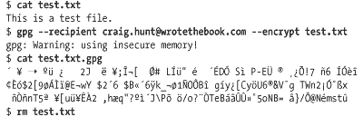

|  |

| |
Encryption is a technique for limiting access to the data carried on the network. Encryption encodes the data in a form that can be read only by systems that have the "key" to the encoding scheme. The original text, called the "clear text," is encrypted using an encryption device (hardware or software) and an encryption key. This produces encoded text, which is called the cipher. To recreate the clear text, the cipher must be decrypted using the same type of encryption device and an appropriate key.
Largely because of spy novels and World War II movies, encryption is one of the first things that people think of when they think of security. However, encryption has not always been applicable to network security. Traditionally, encrypting data for transmission across a network required that the same encryption key, called a shared secret or a private key, be used at both ends of the data exchange. Unless you controlled both ends of the network and could ensure that the same encryption key was available to all participants, it was difficult to use end-to-end data encryption. For this reason, encryption was most commonly used to exchange data where the facilities at both ends of the network were controlled by a single authority, such as military networks, private networks, individual systems, or when the individuals at both ends of the communication could reach personal agreement on the encryption technique and key. Encryption that requires prior agreement to share a secret key is called symmetric encryption.
Public-key encryption is the technology that makes encryption an important security technology for an open global network like the Internet. For example, an e-commerce web server and any customer's web browser can exchange encrypted data because they both use public-key cryptography. Public-key systems encode the clear text with a key that is widely known and publicly available, but the cipher can only be decoded back to clear text with a secret key. This means that Dan can look up Kristin's public key in a trusted database and use it to encode a message to her that no one else can read. Even though everyone on the Internet has access to the public key, only Kristin can decrypt the message using her secret key. This encrypted communication takes place without Kristin ever divulging her secret key.
Additionally, messages encrypted using the private key can only be decrypted by the public key. Thus the public key can be used to authenticate the source of a message since only the proper source should have access to the private key. Because public-key cryptography uses different keys for encryption and decryption, it is called asymmetric encryption.
One problem with asymmetric encryption is that it is computationally intensive and slow when compared to symmetric encryption. For this reason it is used for only a small portion of the data exchange. Public-key encryption is used for both encryption and authentication during the initial handshake of an encrypted connection. During the handshake, a shared secret key, protected by public-key encryption, is exchanged by the participants. The subsequent data exchange is encrypted with symmetric encryption using that shared key.
Another problem with public-key encryption in a global network is that it requires a universally recognized, trusted infrastructure to distribute public keys and to ensure that the keys have not been tampered with. The first step when Dan sent a message to Kristin was retrieving her public key. But where did it come from? The key probably came from one of two places: from a private exchange of public keys or from the network with verification from a trusted certificate authority. When the number of participants is limited, public keys can be exchanged through private agreements in the same manner that private keys used to be exchanged. That does not work, however, for global network applications where there is no prior knowledge of the participants. In that case the public key is obtained from the network and certified by a trusted third party called a certificate authority (CA). The CA provides the public key in a message called a certificate that contains the public key, the name of the organization whose key it is, and dates when the key became valid and when it will become invalid. This message is signed with the private key of the CA. Thus when the certificate is verified using the CA's public key, the recipient knows that the certificate came from the trusted CA. CA public keys are well known and widely distributed. For example, browser vendors provide the public keys of many CAs with every copy of their browser software.
The type of encryption used in the examples in the next section is symmetric encryption. It requires that the same encryption technique and the same secret key is used for both encrypting and decrypting the message. It does not rely on public keys, digital signatures, or a widely accepted infrastructure, but its usefulness is limited.
Before using encryption, decide why you want to encrypt the data, whether the data should be protected with encryption, and whether the data should even be stored on a networked computer system.
A few valid reasons for encrypting data are:
To prevent casual browsers from viewing sensitive data files
To prevent accidental disclosure of sensitive data
To prevent privileged users (e.g., system administrators) from viewing private data files
To complicate matters for intruders who attempt to search through a system's files
There are several tools available for encrypting data files, many of which are commercial packages. Two open source filesystems that provide automatic file encryption are the Cryptographic File System (CFS) and the Practical Privacy Disk Driver (PPDD).[136] There are even a couple of file encryption tools included with Solaris and Linux.
[136]Linux Security by Ramon Hontanon (Sybex) covers the installation, configuration, and use of both CFS and PPDD.
Solaris includes the old Unix crypt command. crypt is easy to use, but it has limited value. The encryption provided by crypt is easily broken. At best, crypt protects files from casual browsing, nothing more.
The age of crypt and the fact that other, better, more recent symmetric encryption tools are not included with the operating system show that there is little demand for symmetric encryption tools. Public-key encryption is simply more flexible and can be used for a wider range of applications. In fact, the file encryption tool included with Linux is an asymmetric encryption tool.
Public-key encryption is the type of encryption that has the greatest customer demand. The most popular Unix encryption tools, ssh and SSL, are public-key tools. Even for tasks such as encrypting files for local storage, public-key systems are popular because they do not require users to share their private keys.
Linux systems often include the GNU Privacy Guard (gpg). gpg, like the well-known tool PGP,[137] can be used to encrypt files or mail.
[137]PGP: Pretty Good Privacy by Simson Garfinkel (O'Reilly & Associates) provides a book-length treatment of PGP, an encryption program used for files and electronic mail.
It also provides digital signature services that can be used for email authentication. In the following example, gpg is used to encrypt and decrypt a file. We begin by creating our keys with the --gen-key option:
$ gpg -- gen-key
gpg (GnuPG) 1.0.4; Copyright (C) 2000 Free Software Foundation, Inc.
This program comes with ABSOLUTELY NO WARRANTY.
This is free software, and you are welcome to redistribute it
under certain conditions. See the file COPYING for details.
gpg: Warning: using insecure memory!
gpg: /home/craig/.gnupg/secring.gpg: keyring created
gpg: /home/craig/.gnupg/pubring.gpg: keyring created
Please select what kind of key you want:
(1) DSA and ElGamal (default)
(2) DSA (sign only)
(4) ElGamal (sign and encrypt)
Your selection? 1
DSA keypair will have 1024 bits.
About to generate a new ELG-E keypair.
minimum keysize is 768 bits
default keysize is 1024 bits
highest suggested keysize is 2048 bits
What keysize do you want? (1024) 1024
Requested keysize is 1024 bits
Please specify how long the key should be valid.
0 = key does not expire
<n> = key expires in n days
<n>w = key expires in n weeks
<n>m = key expires in n months
<n>y = key expires in n years
Key is valid for? (0) 0
Key does not expire at all
Is this correct (y/n)? y
A User-ID identifies your key; the software constructs the user id
from Real Name, Comment and Email Address in this form:
"Heinrich Heine (Der Dichter) <heinrichh@duesseldorf.de>"
Real name: Craig Hunt
Email address: craig.hunt@wrotethebook.com
Comment:
You selected this USER-ID:
"Craig Hunt <craig.hunt@wrotethebook.com>"
Change (N)ame, (C)omment, (E)mail or (O)kay/(Q)uit? o
You need a Passphrase to protect your secret key.
Type the passphrase: Fateful lightening
Repeat: Fateful lightening
We need to generate a lot of random bytes. It is a good idea to perform
some other action (type on the keyboard, move the mouse, utilize the
disks) during the prime generation; this gives the random number
generator a better chance to gain enough entropy.
+++++.+++++.+++++.++++++++++++++++++++.+++++.+++++++++++++++++++++++++.++++++++++.
++++++++++++++++++++.+++++++++++++++++++++++++++++++++++>.+++++.............................+++++^^^
public and secret key created and signed.The --gen-key option asks several questions. However, the questions are simple and the initial key generation needs to be done only once. First gpg asks what kind of key you want. What it is really asking is whether you want to use the keys for digital signatures, for encryption, or for both digital signatures and encryption. Choose (1), which is the default. This creates both types of keys so that you're prepared for any encryption task. Next it asks how long the key should be; the longer the key, the more difficult it is to generate and crack. The default is 1024 bits, which is plenty long for any realistic gpg application. gpg asks for your name, email address, and, optionally, a comment. It uses this information to identify your keys in the key databases. Finally, it asks for a passphrase that will be used to identify you when you access your secret key.
gpg uses two key databases: one for secret keys and one for public keys. gpg calls these databases "key rings." The database of secret keys is secring.gpg and the database of public keys is pubring.gpg. Both public and private keys are used when we encrypt and then decrypt a file. The following example shows the encryption process:

The cat command shows that we have created a simple text file named test.txt that we wish to encrypt. It is clear what the --encrypt option on the gpg command line is doing, but the purpose of the --recipient argument is not as clear. The pubring.gpg database can contain many public keys. The --recipient argument identifies the public key used to encrypt the file. The word "recipient" is used because gpg is often used to encrypt mail, and therefore the public key of the mail recipient is used. For this same reason, it is common to identify the desired key with the email address provided when the key was created.
gpg produces a cipher file that has the same name as the clear-text file with the addition of the file extension .gpg. A cat of the cipher file shows that it is not readable. After checking that the cipher file exists, the clear-text file is deleted. It wouldn't do us much good to create an encrypted file if the unencrypted file was still around for everyone to read!
To read the cipher file, it must be decrypted. In the following example, the --decrypt option is used with the gpg command to decrypt the test.txt.gpg file:
$ gpg -- output test.txt -- decrypt test.txt.gpg gpg: Warning: using insecure memory! You need a passphrase to unlock the secret key for user: "Craig Hunt <craig.hunt@wrotethebook.com>" 1024-bit ELG-E key, ID D99991BA, created 2001-09-18 (main key ID 9BE3B5AD) Enter passphrase: Fateful lightening $ cat test.txt This is a test file.
The --output option tells gpg where to write the clear text after decrypting the cipher file. In the example we write it to test.txt. A cat of test.txt shows that the file is readable and that it contains the original test.
These gpg examples are reminiscent of the ssh examples seen earlier in this chapter and the openssl examples in Chapter 11, " Configuring Apache". All of these programs have tools to generate public and private keys that are then used for a specific purpose. gpg secures files and email. ssh secures terminal connections. openssl secures web traffic. SSL, however, can be used to secure communications for a wide variety of applications.
stunnel is a program that uses SSL to encrypt traffic for daemons that do not encrypt their own traffic. stunnel brings the benefit of public-key encryption to a wide variety of network applications. stunnel is included with OpenSSL and is installed when OpenSSL is installed.[138]
[138]OpenSSL is covered in Chapter 11, " Configuring Apache".
Like all applications that use SSL, stunnel needs a certificate to function properly. The easiest way to create the stunnel certificate is to change to the SSL certificate directory and run make, as in the example below:
# cd /usr/share/ssl/certs # make stunnel.pem umask 77 ; \ PEM1=`/bin/mktemp /tmp/openssl.XXXXXX` ; \ PEM2=`/bin/mktemp /tmp/openssl.XXXXXX` ; \ /usr/bin/openssl req -newkey rsa:1024 -keyout $PEM1 -nodes -x509 -days 365 -out $PEM2 ; \ cat $PEM1 > stunnel.pem ; \ echo "" >> stunnel.pem ; \ cat $PEM2 >> stunnel.pem ; \ rm -f $PEM1 $PEM2 Using configuration from /usr/share/ssl/openssl.cnf Generating a 1024 bit RSA private key ....++++++ ........++++++ writing new private key to '/tmp/openssl.3VVjex' ----- You are about to be asked to enter information that will be incorporated into your certificate request. What you are about to enter is what is called a Distinguished Name or a DN. There are quite a few fields but you can leave some blank. If you enter '.', the field will be left blank. For some fields there will be a default value. ----- Country Name (2 letter code) [AU]:US State or Province Name (full name) [Some-State]:Maryland Locality Name (eg, city) []:Gaithersburg Organization Name (eg, company) [Internet Widgits Ltd]:WroteTheBook.com Organizational Unit Name (eg, section) []:Books Common Name (eg, your name or your server's hostname) []:Craig Hunt Email Address []:craig.hunt@wrotethebook.com
By default the openssl installation creates the directory /usr/share/ssl/certs to hold certificates, and by default stunnel looks for a certificate in that directory with the filename stunnel.pem.[139] As with all new openssl certificates, you're prompted for the information needed to uniquely identify the certificate.
[139]The default certificate path can be changed on the stunnel command line with the -p option.
Once the certificate is created, stunnel is ready for use. POP and IMAP are excellent examples of services that can be run inside a secure connection using stunnel. The primary reason that POP and IMAP are run through stunnel is to ensure that the user's password cannot be stolen from a POP or IMAP session and then used by the thief to log into the server. stunnel encrypts everything: the login and the download of mail. This also guarantees that the contents of the mail cannot be surreptitiously read by a snooper during the download, although from the point of view of the system administrator, the password is really the piece of information you want to protect.
For secure POP and IMAP communication to work, both ends of the connection must be able to tunnel the data through SSL. This is not always the case. Some clients do not have stunnel; some do not even have SSL. For this reason, servers usually provide traditional POP and IMAP connections on the appropriate well-known ports, and SSL-secured POP and IMAP on other ports. When run over stunnel, POP is called pops and assigned TCP port 995, and IMAP is called imaps and assigned TCP port 993. pops and imaps are not special protocols. They are simply service names from the /etc/services file that map to port numbers 995 and 993. The following command added to the system startup runs POP inside an SSL tunnel on port 995:
stunnel -d 995 -l /usr/sbin/ipop3d -- ipop3d
Alternatively, stunnel can be run by inetd using an entry in the inetd.conf file. For example, the following entry runs POP inside an SSL tunnel on a demand basis:
pops stream tcp nowait root /usr/sbin/stunnel -l /usr/sbin/ipop3d -- ipop3d
Systems that use xinetd can run stunnel from the xinetd.conf file. The following xinetd entry runs imaps:
service imaps
{
socket_type = stream
wait = no
user = root
server = /usr/sbin/stunnel
server_args = -l /usr/sbin/imapd -- imapd
log_on_failure += USERID
}stunnel has nothing specific to do with POP or IMAP. It can be used to secure a wide variety of daemons. When used to secure a daemon that is normally run by inetd or xinetd, the stunnel command is placed in the inetd.conf or xinetd.conf file, as appropriate. When used to secure a daemon that runs from a startup file, the stunnel command is placed in that startup file.
Despite the power of tools like stunnel and ssh, encryption is not a substitute for good computer security. Encryption can protect sensitive or personal information from snooping, but it should never be the sole means of protecting critical information. Encryption systems can be broken, and encrypted data can be deleted or corrupted just like any other data. So don't let encryption lull you into a false sense of security. Some information is so sensitive or critical that it should not be stored on a networked computer system, even if it is encrypted. Encryption is only a small part of a complete security system.
|  | |
| 12.5. Access Control |  | 12.7. Firewalls |

Copyright © 2002 O'Reilly & Associates. All rights reserved.